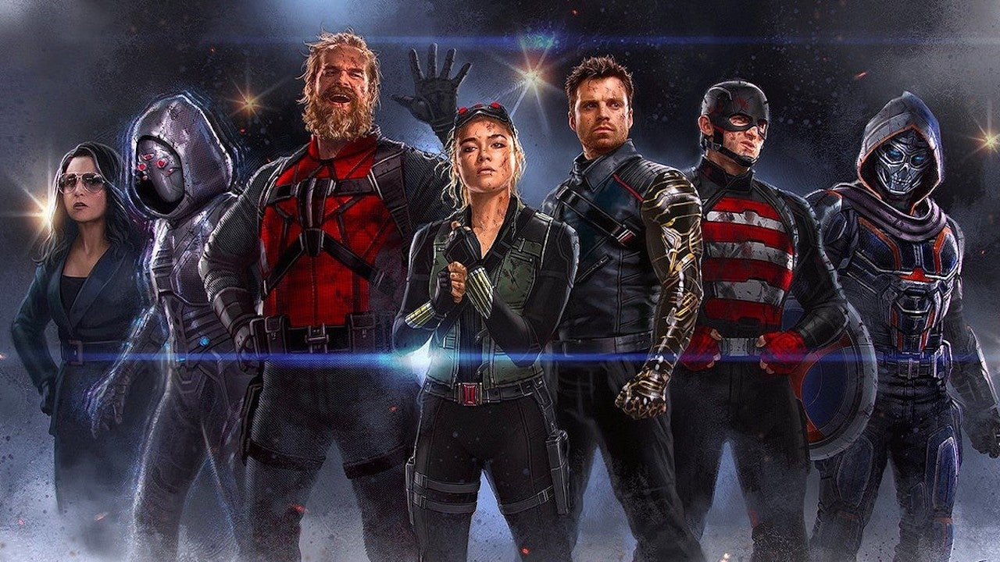
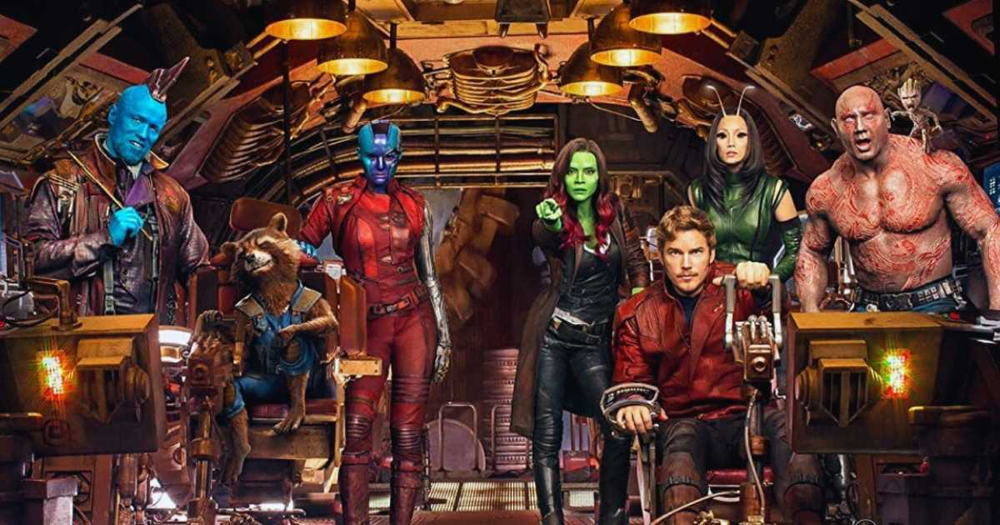
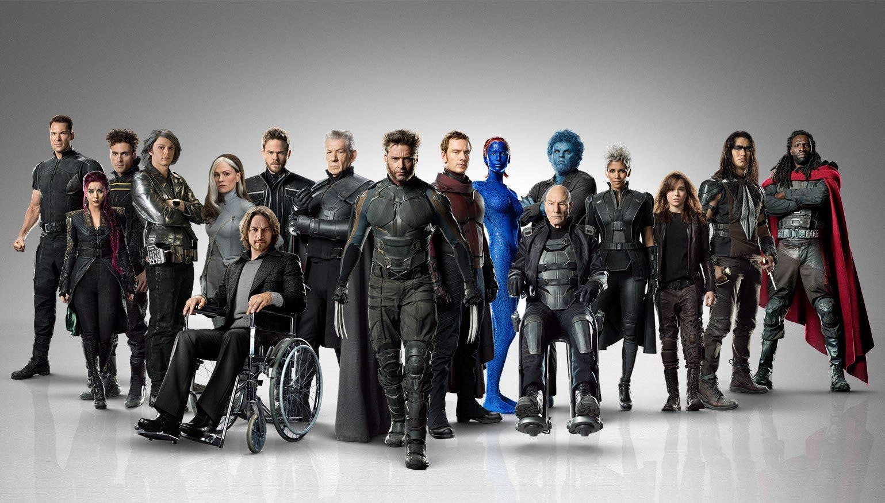

Personagens
O universo Marvel e um dos maiores no quesito Personagens, o numero de personagens gira em torno de 60.000.
Por esse motivo decidimos listar apenas as equipes mais populares e que ja apareceram nas telonas. Veja
abaixo:
TrunderBolts

Os thunderbolts são compostos por: Yelena Belova, Guardião Vermelho, Treinadora, Agente Americano,
Fantasma e Soldado Invernal. Os Thunderbolts, nos cinemas, são um grupo de personagens do universo
Marvel que fazem parte do MCU. Eles são um time de anti-heróis e vilões recrutados pelo governo para
missões secretas, algo semelhante ao Esquadrão Suicida da DC. O filme tem sua estreia em 2 de Maio de
2025
Quarteto Fantastico

O Quateto Fantastico é composto por: Sr.Fantastico, Coisa, Tocha Humana, Mulher Invisel. A história do
Quarteto Fantástico nos cinemas gira em torno de suas explorações científicas, lutas contra inimigos
cósmicos e a dinâmica familiar que define o grupo. O grupo ainda ja teve 3 aparições nos cinemas (2005,
2007 e 2015) e mais atualmente a marvel studios tem se preparado para lançar mais um filme sobre o
grupo. O filme tem sua previsão de lançamento em 2025
Guardiões da Galaxia

O guardioes da galaxia e composto por: Peter-Quill (Senhor das Estrelas), Gamora, Drax, Rocket Racoon,
Groot e mais atualmente Nebulosa. Os Guardiões da Galáxia são um grupo de super-heróis intergalácticos
da Marvel Comics, composto por personagens diversos, muitos dos quais são foras-da-lei ou desajustados.
Eles se unem para proteger a galáxia contra ameaças cósmicas.Os filmes dos Guardiões da Galáxia são
conhecidos por seu humor, ação e desenvolvimento emocional dos personagens, estabelecendo-os como
favoritos no MCU. E recentemente foi lançado o: Guardiões da Galaxia Volume 3, e o filme mais atual da
equipe e tido como um dos melhores da Marvel Studios e um dos melhores no ano de 2023.
X-MEN

Os X-MEN são compostos por: Professor X (Charles Xavier), Wolverine, Ciclope, Fênix, Magneto e Mistica.
Os X-Men são uma equipe de super-heróis mutantes da Marvel. Os mutantes são seres humanos com
habilidades especiais, devido a uma mutação genética. Liderados pelo Professor Charles Xavier (Professor
X), os X-Men lutam por coexistência pacífica entre mutantes e humanos, em um mundo que muitas vezes os
teme e os odeia. Suas histórias exploram temas de discriminação, preconceito e tolerância. Atualmente
foi lançada uma serie de continuação do seriado "X-MEN 97" no stremaing da Disney. Tambem e prevista a
aparição dos x-men nos vingadres de 2026 e 2027.
Vingadores

Os Vingadores são composto principalmente por: Steve Rogers (Capitão América), Natasha Romanoff(Viúva
Negra), Tony Stark (Homem de Ferro), Clint Barton(Gavião Arqueiro), Thor e Bruce Banner(Hulk), Outros
personagens importantes se juntaram aos Vingadores ao longo do tempo, como Visão, Feiticeira Escarlate,
Pantera Negra, Homem-Formiga, Capitã Marvel e Doutor Estranho, entre outros. Os Vingadores no cinema se
tornaram um fenômeno cultural, redefinindo o conceito de filmes de super-heróis e estabelecendo o MCU
como uma das franquias de maior sucesso da história, onde ate pouco tempo Vingadores Ultimato o maior
filme em questão de bilheteria mundial. Esta prevista dois novos Vingadores aos cinemas, sendo
respectivamente: "Vingadores: Doomsday" em 2026 e "Vingadores: Secret Wars" em 2027.